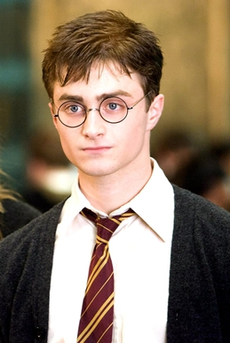

BOUND BY LOYALTY
For seven years, Harry Potter, Hermione Granger, and Ron Weasley faced down every threat to the wizarding world. From fighting a mountain troll in their first year to hunting down Voldemort's Horcruxes, their bond formed the ultimate shield against darkness. Separately, they were students; together, they became the heroes who saved the wizarding world.
CHARACTERS OF THE GROUP

HARRY POTTER
Known as "The Boy Who Lived," Harry James Potter is the only known wizard to have survived the deadly Killing Curse. Marked by a lightning bolt scar on his forehead, he grew up with his neglectful Muggle relatives, the Dursleys, before discovering his magical heritage at age eleven.
Physically, Harry resembles his father, James, but possesses his mother Lily's bright green eyes. Throughout his years at Hogwarts, he demonstrated exceptional talent in Defense Against the Dark Arts and Quidditch. In the final battle, he willingly sacrificed himself in the Forbidden Forest to destroy the Horcrux within him, ultimately returning to defeat Lord Voldemort once and for all.
HERMIONE GRANGER
Often described as the "brightest witch of her age," Hermione Jean Granger is a Muggle-born witch with bushy brown hair and a highly logical, encyclopedic mind. Arriving at Hogwarts, she quickly excelled in all her subjects, utilizing a Time-Turner in her third year to manage an impossible course load.
Hermione is the brains and the logical anchor behind the Trio, often keeping Harry and Ron safe with her advanced spellwork and quick thinking. In her post-Hogwarts life, she worked tirelessly for the Department for the Regulation and Control of Magical Creatures, advocating for house-elf rights, before eventually rising to the position of Minister for Magic.


RON WEASLEY
Ronald Bilius Weasley is the sixth son of the Weasley family, growing up in the chaotic but warm household of the Burrow. He provides the heart, humor, and crucial knowledge of wizarding customs and traditions to the group, often acting as Harry's guide to the magical world.
Though Ron often struggled with insecurity—living in the shadow of his older brothers' achievements and his best friend's fame—his fierce loyalty and courage ultimately prevailed. A master of wizard's chess, he proved his strategic mind early on and stood by Harry's side through every trial, from the Chamber of Secrets to the final horcrux hunt.